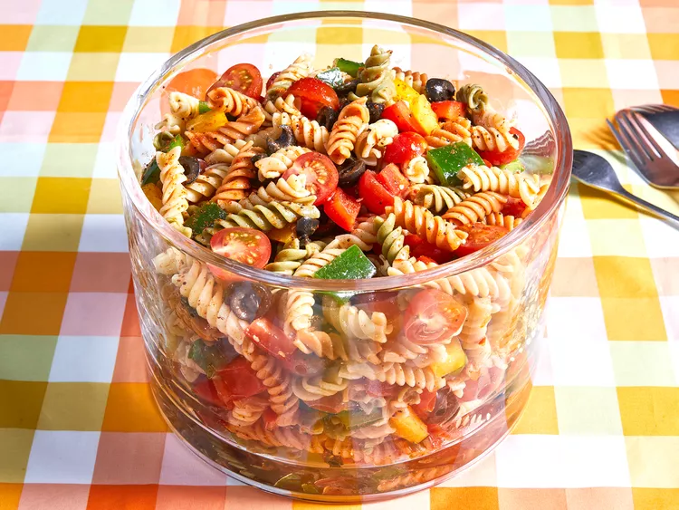

Pasta Salad

Pasta salad ingredents
- 1 pound tri-colored spiral pasta
- 1(16 ounce) botle Italian-style salad dressing
- 6 tablespoons salad seasoning mix
- 2 cups cherry tomatoes, diced
- 1 green bell pepper, chopped
- 1 red bell pepper, diced
- ½ yellow bell pepper, chopped
- 1 (2.25 ounce) can black olives, chopped
Directions:
- Step 1: Gather all ingredents
- Step 2: Bring a large pot of lightly salted water to a boil. Cook pasta in the boiling water, stirring occasionally, until tender yet firm to the bite, about 10 to 12 minutes; rinse under cold water and drain.
- Step 3: Whisk Italian dressing and salad spice mix together until smooth.
- Step 4: Combine pasta, tomatoes, bell peppers, and olives in a salad bowl; pour dressing over salad and toss to coat. Refrigerate salad, 8 hours to overnight.